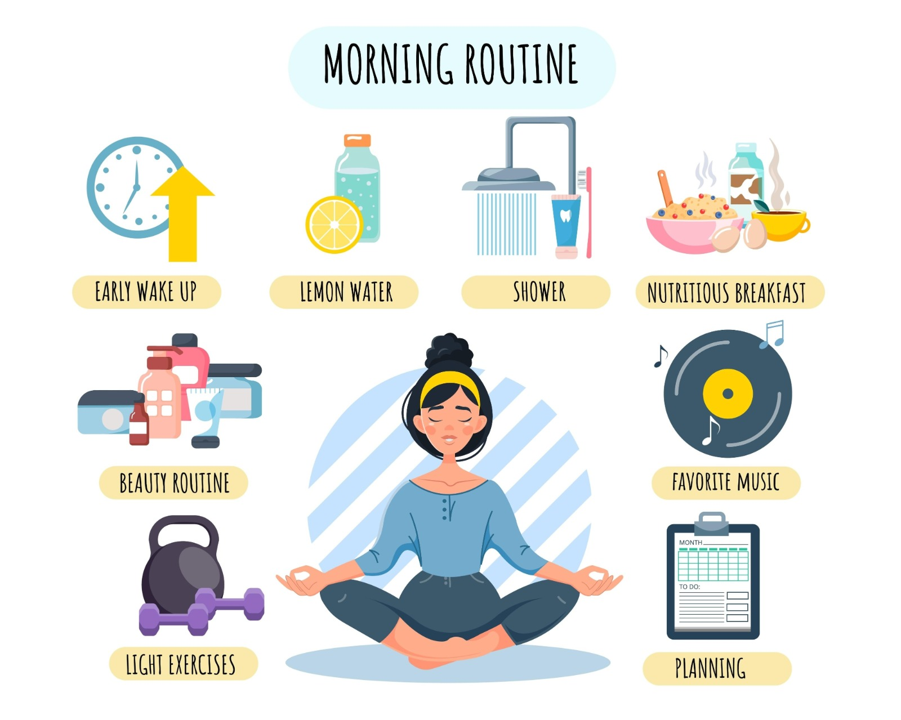
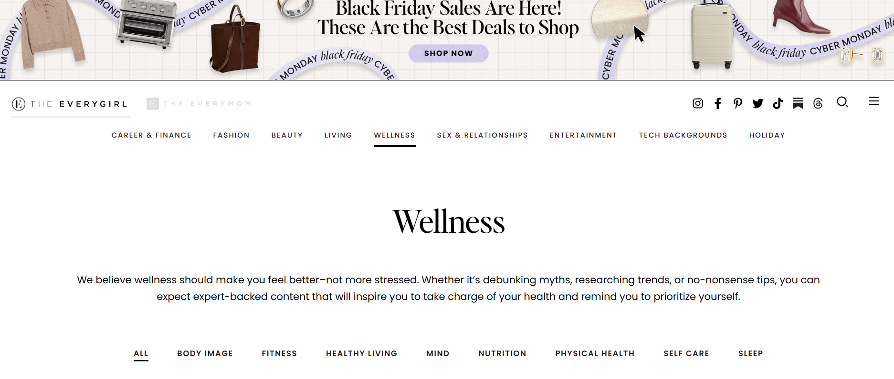
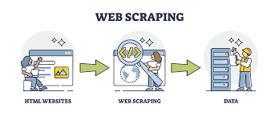
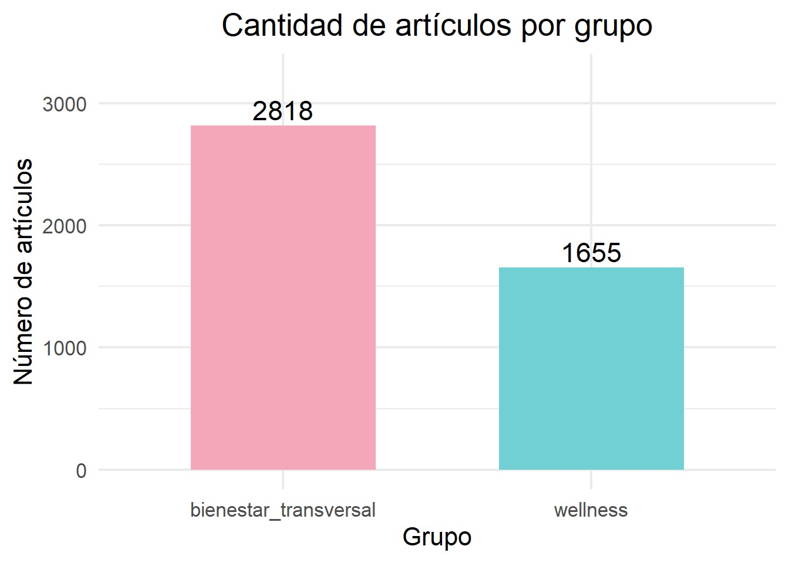
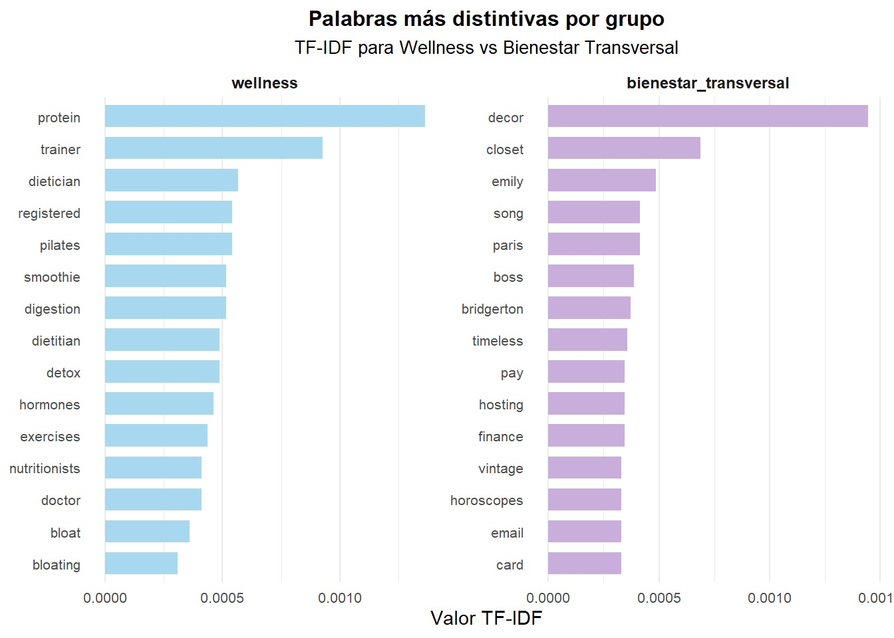
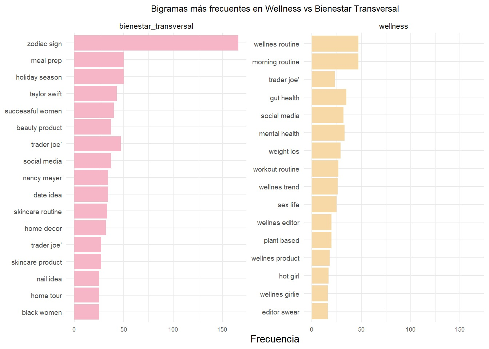
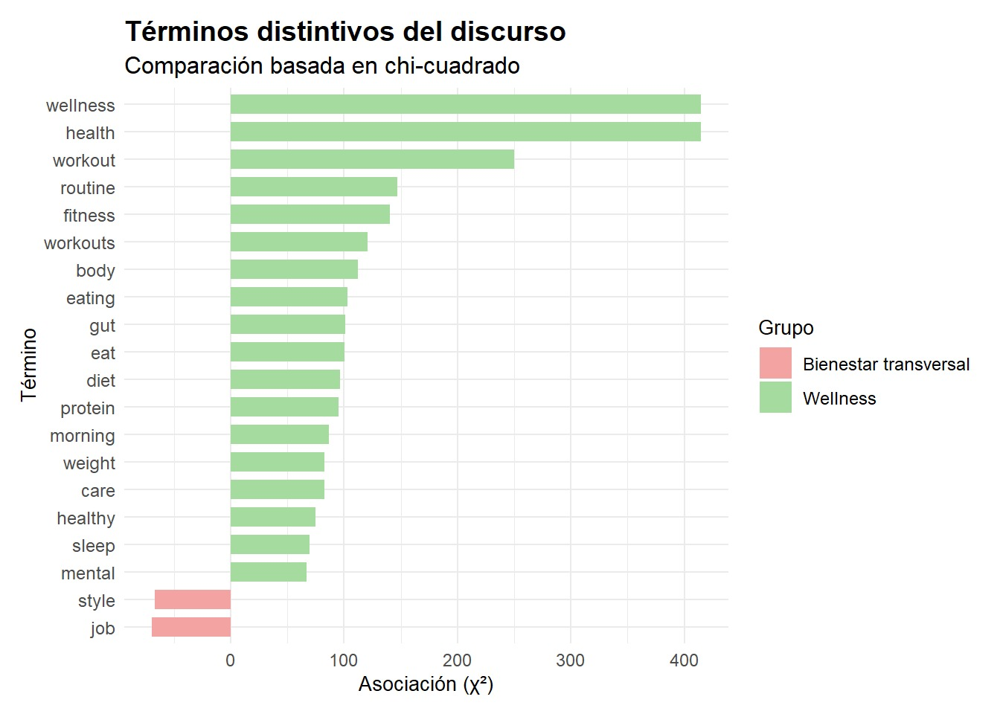
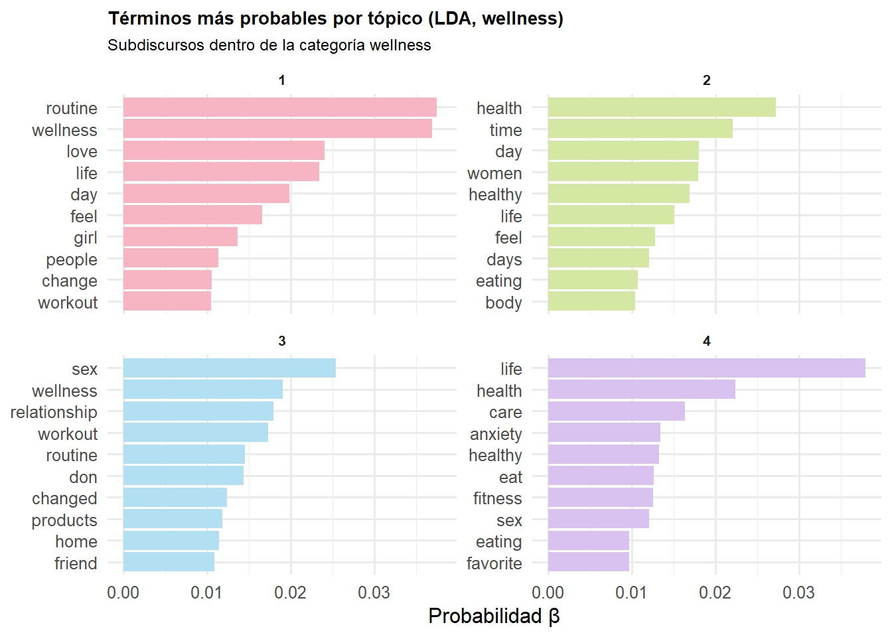
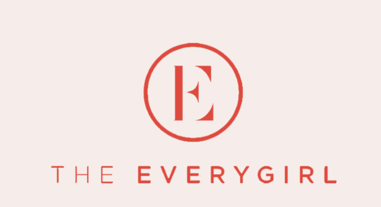

Scrapear el bienestar:
un análisis computacional del discurso en The Everygirl entre 2017–2024
Elisa Calderón y Amalia Tsukame
Índice
- Introducción
- Pregunta de investigación
- Objetivo de investigación
- Relevancia sociológica
- Fuente de información
- Metodología
- Tutorial
- Resultados
- Conclusiones
- Limitaciones
- Referencias bibliográficas
Introducción
- El crecimiento de la población ha impulsado la expansión y la variedad de distinciones de estatus e identidad (Butler & Coward, 2024).
- Plataformas como sitios web, blogs y RR.SS. dirigidos principalmente a mujeres jóvenes, como The Everygirl, han adoptado el lenguaje del autocuidado y la eficiencia emocional como parte central del imaginario cotidiano.
- Estos discursos combinan nociones de salud mental, organización personal y motivación laboral, configurando así una forma específica de subjetividad femenina.
Pregunta de investigación
¿Cómo se construye y caracteriza el discurso del bienestar femenino en The Everygirl entre los años 2017 y 2024?
Objetivo de investigación
Analizar las representaciones discursivas del bienestar femenino en los artículos publicados por The Everygirl entre los años 2017 y 2024.

Relevancia sociológica
El análisis de los discursos digitales sobre bienestar permite observar cómo el neoliberalismo se internaliza en las formas cotidianas de pensar y sentir.
Estudiar The Everygirl permite observar cómo se articulan feminidad, consumo y trabajo emocional, transformando el bienestar en una responsabilidad individual.
Fuente de Información
- Sitio web estadounidense (https://theeverygirl.com)
- Fundado en 2012 y publica artículos de estilo de vida, bienestar, finanzas personales, trabajo, moda y relaciones.

Metodología
Web scraping mediante lenguaje R.
Se utilizaron los feeds RSS
Se recopilaron 4.513 artículos indexados en RSS (títulos, autores, descripciones y fechas), que fueron almacenados en formato .csv.

Tutorial:códigos para extraer la infromación
- Paso 1: Preparación del entorno de trabajo
- Paso 1.1: Cargar librerías
# Web scraping
library(httr)
library(xml2)
# Manipulación de datos
library(dplyr)
library(stringr)
library(purrr)
library(readr)
library(lubridate)
library(tidyr)
# Análisis de texto
library(tidytext)
library(quanteda)
library(quanteda.textmodels)
library(quanteda.textstats)
library(topicmodels)
# Visualización
library(ggplot2)
library(forcats)
library(scales)Tutorial
- Paso 1: Preparación del entorno de trabajo
- Paso 1.2: Definir parámetros
Tutorial
- Paso 2: Funciones para extraer información de los feeds
read_feed_page <- function(feed_page_url){
zzz()
resp <- tryCatch(httr::GET(feed_page_url, httr::user_agent("Mozilla/5.0")), error = function(e) NULL)
if (is.null(resp) || httr::http_error(resp)) return(tibble())
xml <- xml2::read_xml(httr::content(resp, as="raw"))
items <- xml2::xml_find_all(xml, ".//item")
if (!length(items)) return(tibble())
tibble(
title = xml2::xml_text(xml2::xml_find_all(items, "title")),
link = xml2::xml_text(xml2::xml_find_all(items, "link")),
pub_date = xml2::xml_text(xml2::xml_find_all(items, "pubDate")),
author = xml2::xml_text(xml2::xml_find_all(items, "dc:creator")),
summary = xml2::xml_text(xml2::xml_find_all(items, "description"))
)
}
read_feed_paged <- function(feed_base, max_pages, site, feed_kind, save_tag=NULL){
message(">>> ", feed_base)
out <- list()
for (p in 1:max_pages){
u <- if (p == 1) feed_base else if (grepl("\\?", feed_base)) paste0(feed_base, "&paged=", p) else paste0(gsub("/$", "", feed_base), "/?paged=", p)
message(" página ", p, ": ", u)
df <- read_feed_page(u)
if (nrow(df) == 0) { message(" (sin ítems) fin"); break }
if (length(out)){
prev <- unique(unsublist(lapply(out, `[[`, "link"))); cur <- unique(df$link)
if (length(intersect(prev, cur))/max(length(cur),1) > 0.8){ message(" (>80% repetidos) fin"); break }
}
df$feed <- feed_base; df$site <- site; df$feed_kind <- feed_kind
out[[length(out)+1]] <- df
if (!is.null(save_tag) && (p %% 10 == 0)){
tmp <- dplyr::bind_rows(out)
readr::write_csv(tmp, file.path(OUT_DIR, paste0("partial_", save_tag, ".csv")))
message(" guardado parcial: ", nrow(tmp), " filas (", save_tag, ")")
}
}
if (!length(out)) return(tibble())
dplyr::bind_rows(out)
}
safe_bind <- function(x) if (length(x)) dplyr::bind_rows(x) else dplyr::tibble()Tutorial
- Paso 3: Definir las fuentes RSS (categorías y búsqueda por palabras claves)
feeds_eg_cat <- c(
"https://theeverygirl.com/category/wellness/feed/",
"https://theeverygirl.com/category/career-finance/feed/",
"https://theeverygirl.com/category/career-finance/productivity/feed/",
"https://theeverygirl.com/category/lifestyle/feed/",
"https://theeverygirl.com/category/beauty/feed/",
"https://theeverygirl.com/category/home/feed/",
"https://theeverygirl.com/category/travel/feed/",
"https://theeverygirl.com/category/food-drink/feed/"
)
keywords <- c(
"self care","self-care","wellness","health","mental health","mindfulness","therapy","healing","rest","sleep",
"gratitude","journaling","stress","anxiety","burnout","boundaries","confidence","esteem","calm","balance",
"productivity","focus","routine","morning routine","evening routine","time blocking","goal setting","discipline",
"motivation","attention","organization","planner","bullet journal","to-do list","notion","time management",
"work-life balance","career","work","success","habits","habit","reset","energy","nutrition","movement",
"beauty","skin","fitness","home","declutter","minimalism","slow living","sustainability","budget","money"
)
eg_search_feeds <- paste0("https://theeverygirl.com/?s=", URLencode(keywords), "&feed=rss2")Tutorial
- Paso 4: Extracción completa de artículos y construcción del corpus
cat_eg <- purrr::map(
feeds_eg_cat,
~ read_feed_paged(.x, max_pages_cat, site="everygirl", feed_kind="category", save_tag="eg_cat")
)
sea_eg <- purrr::map(
eg_search_feeds,
~ read_feed_paged(.x, max_pages_search, site="everygirl", feed_kind="search", save_tag="eg_search")
)
rss_df <- dplyr::bind_rows(safe_bind(cat_eg), safe_bind(sea_eg)) %>%
dplyr::mutate(
summary = stringr::str_squish(stringr::str_replace_all(summary, "<.*?>", "")),
category = stringr::str_extract(feed, "(?<=/category/)[^/]+"),
source = dplyr::if_else(
!is.na(category) & category != "",
paste(site, category, sep=":"),
paste(site, feed_kind, sep=":")
)
) %>%
dplyr::distinct(link, .keep_all = TRUE)
readr::write_csv(rss_df, CSV_OUT)
message("CSV final guardado en: ", normalizePath(CSV_OUT, winslash = "/"))Tutorial: Procesamiento de datos
- Paso 5: Carga del corpus y fechas
- Paso 5.1: Cargar corpus
- Paso 5.2: Fechas y filtro temporal
Tutorial
- Paso 5: Carga del corpus y fechas
- Paso 5.3: Descriptivos
# Total de artículos
n_total <- nrow(df)
cat("Total de artículos en el corpus:", n_total, "\n")
# Distribución por año
by_year <- df %>%
count(year) %>%
arrange(year)
cat("\nArtículos por año:\n")
print(by_year)
# Gráfico: Artículos por año
df %>%
count(year) %>%
ggplot(aes(x = year, y = n)) +
geom_col(fill = "#c4a3e8") +
geom_text(
aes(label = n),
vjust = -0.5,
size = 4
) +
scale_x_continuous(breaks = 2017:2024) +
ylim(0, 1400) +
labs(
title = "Cantidad de artículos por año",
x = "Año",
y = "Número de artículos"
) +
theme_minimal(base_size = 14)Tutorial
- Paso 6: Limpieza de texto
df <- df %>%
mutate(
text = paste(title, summary, sep = ". "),
text = str_replace_all(text, "’", "'"),
text = str_replace_all(text, "–", "-"),
text = str_replace_all(text, "&", "&"),
text = str_remove_all(text, "This post.*$"),
text = str_remove_all(text, "The Everygirl.*$"),
text = str_replace_all(text, "appeared", " "),
text = str_replace_all(text, "everygirl", " "),
text = str_replace_all(text, "post", " "),
text = str_squish(text)
)
df <- df %>%
mutate(
text = str_replace_all(text, "\\bve\\b", " "),
text = str_replace_all(text, "\\bve’\\b", " "),
text = str_replace_all(text, "’ve", " ") # por si viene de "we've"
)
df <- df %>%
mutate(doc_id = row_number())Tutorial
- Paso 7: Reconstrucción y filtrado de categorías
- Paso 7.1: Reconstrucción
df <- df %>%
mutate(
category2 = case_when(
str_detect(feed, "wellness") ~ "wellness",
str_detect(feed, "career-finance/productivity") ~ "productivity",
str_detect(feed, "career-finance") ~ "career",
str_detect(feed, "beauty") ~ "beauty",
str_detect(feed, "lifestyle") ~ "lifestyle",
str_detect(feed, "home") ~ "home",
TRUE ~ "bienestar_transversal"
)
)Tutorial
- Paso 7: Reconstrucción y filtrado de categorías
- Paso 7.2: Filtrar categorías
Tutorial
- Paso 7: Reconstrucción y filtrado de categorías
- Paso 7.3: Crear variable group y graficar
df <- df %>%
mutate(
group = if_else(
category2 == "wellness",
"wellness",
"bienestar_transversal"
)
)
# Gráfico por grupo
df %>%
count(group) %>%
ggplot(aes(x = group, y = n, fill = group)) +
geom_col(width = 0.6, show.legend = FALSE) +
geom_text(
aes(label = n),
vjust = -0.3,
size = 6,
color = "black"
) +
scale_fill_manual(values = c(
"bienestar_transversal" = "#F4A7B9",
"wellness" = "#71D0D4"
)) +
expand_limits(y = max(df %>% count(group) %>% pull(n)) * 1.15) +
labs(
title = "Cantidad de artículos por grupo",
x = "Grupo",
y = "Número de artículos"
) +
theme_minimal(base_size = 16) +
theme(
plot.title = element_text(hjust = 0.5, size = 20),
axis.title.x = element_text(),
axis.title.y = element_text()
)Tutorial
- Paso 8: Stopwords
Tutorial
- Paso 9: Tokenización
Tutorial
- Paso 9.1: Tokenización en bigramas
tokens_bigram <- df %>%
select(doc_id, text) %>%
unnest_tokens(bigram, text, token = "ngrams", n = 2)
bigrams_sep <- tokens_bigram %>%
separate(bigram, into = c("w1", "w2"), sep = " ") %>%
filter(
!w1 %in% all_stops$word,
!w2 %in% all_stops$word,
nchar(w1) > 2,
nchar(w2) > 2
) %>%
mutate(
w1 = tolower(w1),
w2 = tolower(w2),
w1 = gsub("s$", "", w1),
w2 = gsub("s$", "", w2),
bigram = paste(w1, w2)
) %>%
count(bigram, sort = TRUE)Tutorial: análisis de datos
- Paso 10: TF-IDF por grupo (wellness vs bienestar_transversal)
tfidf_words <- tokens_unigram %>%
count(group, word, sort = TRUE) %>%
bind_tf_idf(word, group, n) %>%
arrange(desc(tf_idf))
top_tfidf <- tfidf_words %>%
group_by(group) %>%
slice_max(tf_idf, n = 15) %>%
ungroup()
# Gráfico
top_tfidf$group <- factor(
top_tfidf$group,
levels = c("wellness", "bienestar_transversal")
)
ggplot(
top_tfidf,
aes(
x = reorder_within(word, tf_idf, group),
y = tf_idf,
fill = group
)
) +
geom_col(show.legend = FALSE, width = 0.7) +
facet_wrap(~ group, scales = "free", ncol = 2) +
coord_flip() +
tidytext::scale_x_reordered() +
scale_fill_manual(values = c(
"bienestar_transversal" = "#c9addb",
"wellness" = "#a7d8f0"
)) +
scale_y_continuous(labels = label_number(accuracy = 0.0001)) +
labs(
title = "Palabras más distintivas por grupo",
subtitle = "TF-IDF para Wellness vs Bienestar Transversal",
x = NULL,
y = "Valor TF-IDF"
) +
theme_minimal() +
theme(
text = element_text(size = 8),
plot.title = element_text(size = 12, face = "bold", hjust = 0.5),
plot.subtitle = element_text(size = 10, hjust = 0.5),
strip.text = element_text(size =_Tutorial
- Paso 11: Bigramas por grupo (wellness vs bienestar_transversal)
bigrams_group <- tokens_bigram %>%
separate(bigram, into = c("w1", "w2"), sep = " ") %>%
filter(
!w1 %in% all_stops$word,
!w2 %in% all_stops$word,
nchar(w1) > 2,
nchar(w2) > 2
) %>%
mutate(
w1 = tolower(w1),
w2 = tolower(w2),
w1 = gsub("s$", "", w1),
w2 = gsub("s$", "", w2),
bigram = paste(w1, w2)
) %>%
inner_join(df %>% select(doc_id, group), by = "doc_id") %>%
count(group, bigram, sort = TRUE)
top_bi <- bigrams_group %>%
group_by(group) %>%
slice_max(n, n = 15) %>%
ungroup()
ggplot(
top_bi,
aes(
x = n,
y = fct_reorder(bigram, n),
fill = group
)
) +
geom_col(show.legend = FALSE) +
facet_wrap(~ group, scales = "free_y") +
scale_fill_manual(values = c(
"bienestar_transversal" = "#F7B5C8",
"wellness" = "#F7D9A8"
)) +
labs(
title = "Bigramas más frecuentes en Wellness vs Bienestar Transversal",
x = "Frecuencia",
y = NULL
) +
theme_minimal(base_size = 10) +
theme(
plot.title = element_text(size = 9, hjust = 0.5),
strip.text = element_text(size = 8),
axis.text.y = element_text(size = 7),
axis.text.x = element_text(size = 6)
)Tutorial
- Paso 12: Keyness
- Paso 12.1: Limpieza especial
limpiar <- function(x){
x %>%
str_replace_all("[[:punct:]]", " ") %>% # eliminar puntuación
str_replace_all("[0-9]+", " ") %>% # eliminar números
str_replace_all("â|€|™", " ") %>% # eliminar caracteres especiales
str_replace_all("8217|8220|8221", " ") %>% # eliminar residuos de HTML
str_squish() %>% # eliminar espacios extra
tolower() # pasar a minúsculas
}
df$text_clean <- limpiar(df$text)Tutorial
- Paso 12.2: Crear corpus, tokenizar y construir matriz DFM
corp_key <- df %>%
mutate(
group = if_else(
category2 == "wellness",
"wellness",
"bienestar_transversal"
)
) %>%
corpus(text_field = "text_clean")
tokens_key <- tokens(
corp_key,
remove_punct = TRUE,
remove_numbers = TRUE
) %>%
tokens_tolower() %>%
tokens_remove(all_stops$word)
dfm_key <- dfm(tokens_key)
dfm_sub <- dfm_key[
docvars(dfm_key, "group") %in% c("wellness", "bienestar_transversal"),
]Tutorial
- Paso 12.3: Cálculo de Keyness
Tutorial
- Paso 12.4: Gráfico de Keyness
ggplot(
key20,
aes(
x = reorder(feature, chi2),
y = chi2,
fill = group_label
)
) +
geom_col(width = 0.7) +
coord_flip() +
scale_fill_manual(values = c(
"Wellness" = "#a6dba0",
"Bienestar transversal" = "#f4a3a3"
)) +
labs(
title = "Términos distintivos del discurso",
subtitle = "Comparación basada en chi-cuadrado",
x = "Término",
y = "Asociación (χ²)",
fill = "Grupo"
) +
theme_minimal(base_size = 10) +
theme(
plot.title = element_text(size = 14, face = "bold"),
plot.subtitle = element_text(size = 12),
axis.text.x = element_text(size = 9),
axis.text.y = element_text(size = 9),
legend.title = element_text(size = 10),
legend.text = element_text(size = 9),
plot.margin = margin(10, 10, 10, 10)
)Tutorial
- Paso 13: Topic Modeling (LDA) en Wellness
- Paso 13.1: Filtrar corpus y construir DTM
df_well <- df %>%
filter(category2 == "wellness")
corp_well <- corpus(
df_well,
text_field = "text_clean"
)
dfm_well <- tokens(
corp_well,
remove_punct = TRUE,
remove_numbers = TRUE
) %>%
tokens_tolower() %>%
tokens_remove(all_stops$word) %>%
dfm() %>%
dfm_trim(min_termfreq = 10)
dtm_well <- convert(dfm_well, to = "topicmodels")Tutorial
- Paso 13.2: Ajustar modelo LDA y obtener términos principales
Tutorial
- Paso 13.3: Gráfico de tópicos (LDA Wellness)
ggplot(
top_terms_well,
aes(
x = reorder_within(term, beta, topic),
y = beta,
fill = factor(topic)
)
) +
geom_col(show.legend = FALSE) +
facet_wrap(~ topic, scales = "free_y") +
coord_flip() +
tidytext::scale_x_reordered() +
scale_fill_manual(values = c(
"1" = "#f7b5c3", # rosado pastel
"2" = "#d4e8a3", # verde pastel
"3" = "#b2e0f2", # celeste pastel
"4" = "#d9c2f0" # lila pastel
)) +
labs(
title = "Términos más probables por tópico (LDA, wellness)",
subtitle = "Subdiscursos dentro de la categoría wellness",
x = NULL,
y = "Probabilidad β"
) +
theme_minimal(base_size = 12) +
theme(
plot.title = element_text(size = 10, face = "bold"),
plot.subtitle = element_text(size = 9),
strip.text = element_text(size = 8, face = "bold")
)Tutorial
- Paso 14: Evolución temporal de términos clave
# PASO 14: EVOLUCIÓN TEMPORAL
palabras_clave <- c(
"anxiety","stress","routine","balance",
"health","mental","productivity","self"
)
freq_year <- tokens_unigram %>%
filter(word %in% palabras_clave) %>%
count(year, word)
ggplot(
freq_year,
aes(
x = year,
y = n,
color = word
)
) +
geom_line(linewidth = 1) +
geom_point(size = 2) +
scale_x_continuous(breaks = 2017:2024) +
labs(
title = "Evolución temporal de términos asociados al bienestar (2017–2024)",
x = "Año",
y = "Frecuencia absoluta",
color = "Término"
) +
theme_minimal(base_size = 14)Resultados
Distribución temporal de las publicaciones (2017–2024)

Resultados
Cantidad de artículos por grupos mayoritarios

Resultados
TF-IDF: términos distintivos en wellness y bienestar transversal

Resultados
Bigramas más frecuentes

Resultados
Keyness: palabras distintivas por grupo

Resultados
Modelo LDA: subtemas del discurso wellness

Resultados
Evolución temporal del léxico bienestar (2017–2024)

Conclusión
El sitio promueve una ética donde la mujer moderna debe trabajar constantemente sobre su cuerpo y emociones para lograr equilibrio y validación.
Las narrativas combinan un bienestar técnico y cotidiano para configurar una identidad autónoma.
Tras la pandemia, el bienestar se consolida como el eje ordenador de la vida diaria.
El bienestar en The everygirl se define como un proyecto personal, reforzando un ideal neoliberal de feminidad.
Limitaciones
El análisis se realizó únicamente sobre los títulos y resúmenes de los artículos.
Las categorías originales del sitio dependen de criterios editoriales internos, por lo que no siempre reflejan con precisión la orientación temática real de cada artículo.
El sitio web va dirigido exclusivamente a mujeres jóvenes, profesionales y de clase media.
Referencias bibliográficas
Butler, S. M., & Coward, N. (2024). Young people’s self-making in neoliberal capitalism: Challenges and opportunities. Lateral, 13(2). https://csalateral.org/issue/13-2/young-people-self-making-neoliberal-capitalism-butler-coward/
Carretero García C. y Borges Gómez E. (2023). La producción de la marca personal a través de Instagram: intersecciones entre feminidad y neoliberalismo en la proyección estética y corporal de las influencers. Cuadernos de Relaciones Laborales, 41(2), 285-312. https://doi.org/10.5209/crla.87827
Rodríguez Barcia, S., & Varela Suárez, A. (2025). Cronolatría y sisifemia. Análisis del discurso del culto a la productividad en las redes sociales. Logos: Revista de Lingüística, Filosofía y Literatura, 35(2), 795–817. https://revistas.userena.cl/index.php/logos/article/view/2653/2707
The Everygirl Media Group, LLC. (s. f.). About The Everygirl Media Group. Recuperado el 23 de noviembre de 2025, de https://theeverygirl.com/about/
¡Muchas gracias por su atención!
